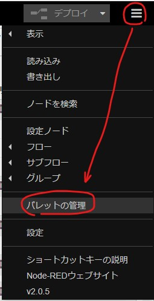
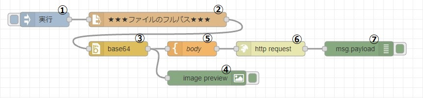
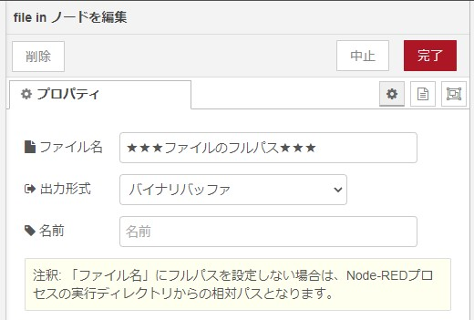
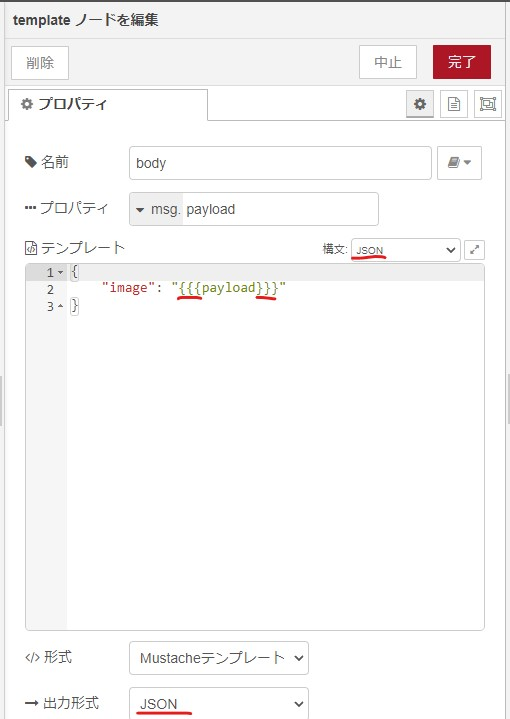
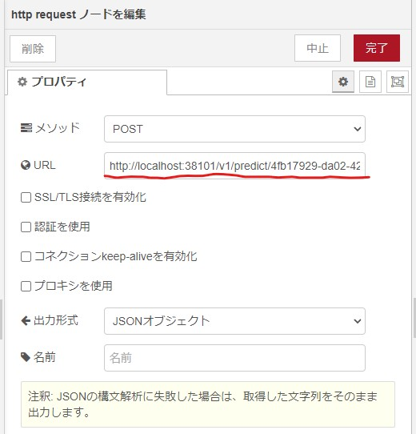
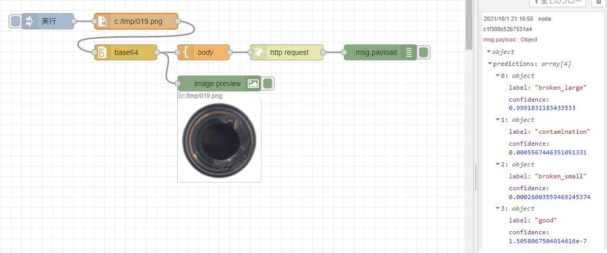
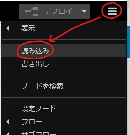

Node-REDで機械学習を行ってみます。
前回は「Microsoft Lobe」でモデルを作成する手順を説明しましたので、今回はNode-REDからモデルを利用する手順を説明します。
Node-REDからモデルを利用する手順
「node-red-contrib-image-output」と「node-red-node-base64」を使います。まだ追加していない場合は、以下のように「パレットの管理」を開いて追加してください。

以下のようにノードを配置します。

- ①「inject」ノード
- 処理を実行するためのボタンとして使います。
- ②「file in」ノード
- ファイルの内容を読み込みます。出力形式は、「バイナリバッファ」です。★★★の部分にファイルのフルパスを記入してください。
- 
- ③「base64」ノード
- バッファーをbase64形式に変換します。
- ④ 「image」ノード
- バイナリバッファ形式かbase64形式の画像を表示することができます。
- ⑤「template」ノード
- リクエストボディを作成します。ポイントは
{{{payload}}}の部分と、構文と出力形式を「JSON」にすることです。 - 
- ⑥「http request」ノード
- URL欄に、前回コピーしたURLをペーストします。
- 
- ⑦「debug」ノード
- 結果を表示します。
実行した結果の例は以下の通りです。Node-REDは入出力を自在に変更できますので、いろいろな使い道がありそうです。

書き出したノード
以下は上記のノードを書き出したものです。コピーしてください。
[
{
"id": "30727d20eb9731bc",
"type": "inject",
"z": "bbc7170261bafbe4",
"name": "実行",
"props": [
{
"p": "payload"
},
{
"p": "topic",
"vt": "str"
}
],
"repeat": "",
"crontab": "",
"once": false,
"onceDelay": 0.1,
"topic": "",
"payloadType": "date",
"x": 150,
"y": 60,
"wires": [
[
"a1073781125e5843"
]
]
},
{
"id": "a1073781125e5843",
"type": "file in",
"z": "bbc7170261bafbe4",
"name": "",
"filename": "c:/tmp/019.png",
"format": "",
"chunk": false,
"sendError": false,
"encoding": "none",
"allProps": false,
"x": 320,
"y": 60,
"wires": [
[
"d175111c0641da56"
]
]
},
{
"id": "c5abd02ee5bbc6d3",
"type": "image",
"z": "bbc7170261bafbe4",
"name": "",
"width": 160,
"data": "payload",
"dataType": "msg",
"thumbnail": false,
"active": true,
"pass": false,
"outputs": 0,
"x": 480,
"y": 180,
"wires": []
},
{
"id": "92715ce9fe92b35f",
"type": "http request",
"z": "bbc7170261bafbe4",
"name": "",
"method": "POST",
"ret": "obj",
"paytoqs": "ignore",
"url": "http://localhost:38101/v1/predict/4fb17929-da02-4232-a3d5-1e0023eaa27a",
"tls": "",
"persist": false,
"proxy": "",
"authType": "",
"x": 610,
"y": 120,
"wires": [
[
"c1f308c52b7531a4"
]
]
},
{
"id": "d175111c0641da56",
"type": "base64",
"z": "bbc7170261bafbe4",
"name": "",
"action": "",
"property": "payload",
"x": 300,
"y": 120,
"wires": [
[
"dcf8048a38dee8a2",
"c5abd02ee5bbc6d3"
]
]
},
{
"id": "c1f308c52b7531a4",
"type": "debug",
"z": "bbc7170261bafbe4",
"name": "",
"active": true,
"tosidebar": true,
"console": false,
"tostatus": false,
"complete": "payload",
"targetType": "msg",
"statusVal": "",
"statusType": "auto",
"x": 790,
"y": 120,
"wires": []
},
{
"id": "dcf8048a38dee8a2",
"type": "template",
"z": "bbc7170261bafbe4",
"name": "body",
"field": "payload",
"fieldType": "msg",
"format": "json",
"syntax": "mustache",
"template": "{\n \"image\": \"{{{payload}}}\"\n}",
"output": "json",
"x": 450,
"y": 120,
"wires": [
[
"92715ce9fe92b35f"
]
]
}
]以下のようにして読み込みを実行し、ペーストしてください。
